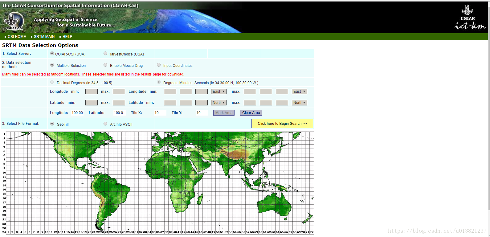
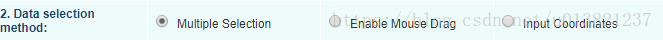
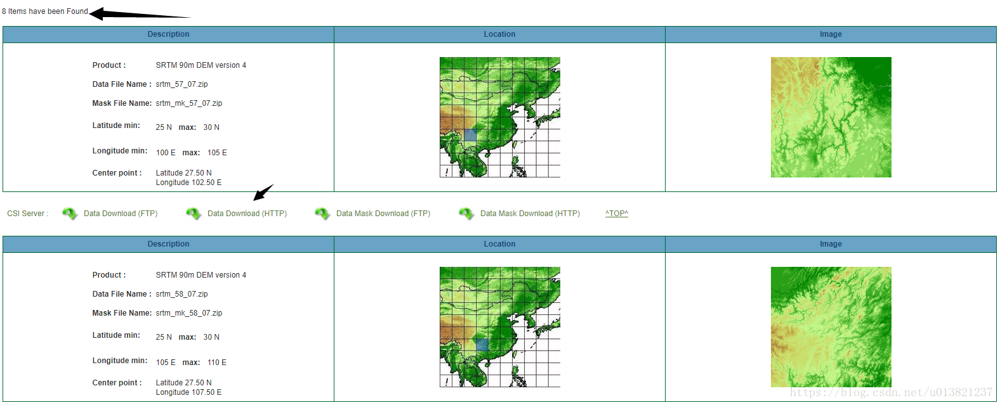
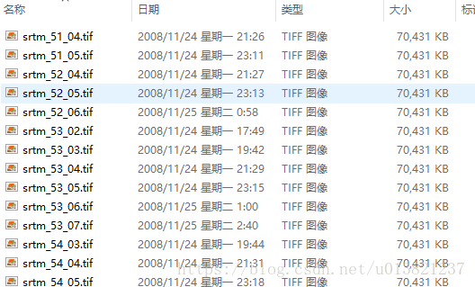
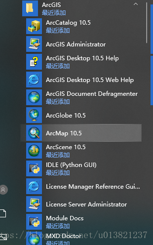
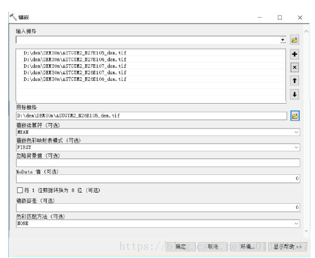
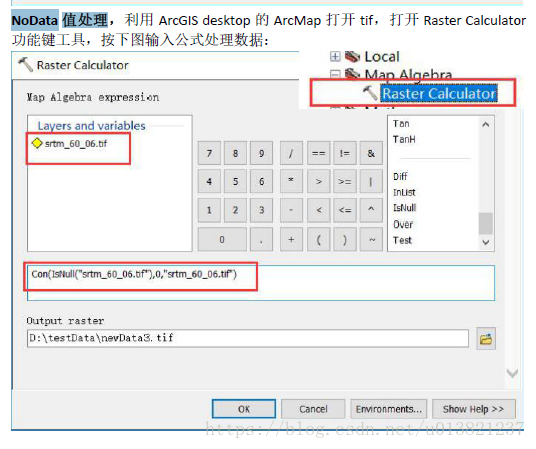
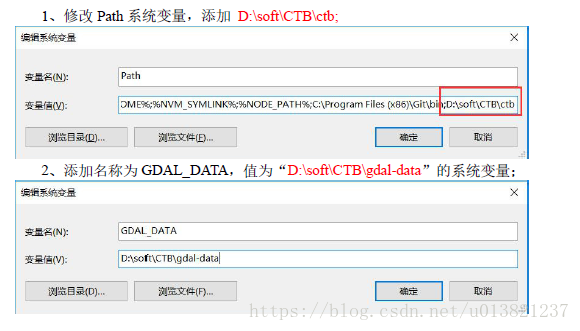
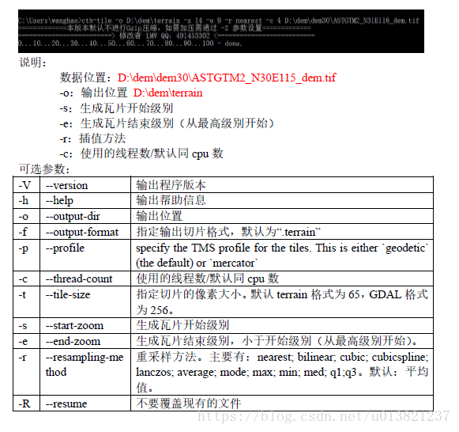
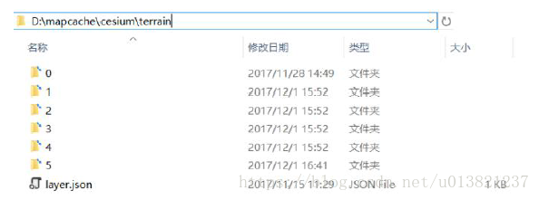

Cesium 生成Terrain地形数据----CTB方式及步骤
Abstract Keywords Cesium Cesium
Citation Yao Qing-sheng.Cesium 生成Terrain地形数据----CTB方式及步骤.FUTURE & CIVILIZATION Natural/Social Philosophy & Infomation Sciences,20240808. https://yaoqs.github.io/20240808/cesium-sheng-cheng-terrain-di-xing-shu-ju-ctb-fang-shi-ji-bu-zou/
转载自 Cesium 生成terrain地形数据----CTB方式及步骤
※Cesium 生成terrain地形数据----CTB方式及步骤
后记：如果你只是需要将tif处理成terrain,而不是学习处理过程，可以直接使用这个简单的工具：CesiumLab。不需要拼接成一个TIF，也不需要处理No-Data，地形功能免费。如果对你有用，点个赞加个关注吧๑乛◡乛๑
背景：项目前端使用Cesium，地形服务一直使用外网的，常常因为翻墙访问的问题，导致地形数据取不到，进而导致地球不能加载，故决定搭建自己的地形服务，彻底解决这个问题。博文包含以下几个过程：
- 下载原始地形数据，格式为.tif。
- 处理地形数据，将零散的地形文件整合成一个地形文件。
- 配置CTB环境
- 使用ctb-tile指令将地形文件(.tif)加工成.terrain文件。
- 发布地形服务并使用Cesium调用。
一、下载原始地形数据
- 下载地址(精度90m)：
http://srtm.csi.cgiar.org/SELECTION/inputCoord.asp - 如果你刚好需要的也是全国地形，可以从楼主网盘下载，更快更方便(密码zyt9)：https://pan.baidu.com/s/1YYC25b48QAVb64mW77vCEw
网盘包含两部分内容：
- dem.rar：原始数据，需要自行使用ArcMap工具整合。
- 合并后的数据：经过ArcMap工具处理的数据，已经整合成了一个地形文件，可以直接跳到第三步。
在网站下载流程：
- 打开网页http://srtm.csi.cgiar.org/SELECTION/inputCoord.asp。如图:
- 根据需要选择方便的选取方式：

MutilpleSelection:点击哪个选哪个，可以选择多个，双击取消。
EnableMouseDrag:框选，框选了什么范围就是什么范围。
InputCoordinates:输入最西，最东。最南，最北的坐标来下载该范围内的所有数据。 - 选择好范围后，点击“Click here to Begin Search”,进入下一步。
- 可以看到刚刚选择了几个数据，点击每个数据的DownLoad，下载数据（这个地方比较繁琐，需要耐心）。
- 下载完数据后解压所有的压缩包，并将tifwen文件拷贝到统一的文件夹内，这里的内容和我网盘中的dem.rar是一样的：
二、处理地形数据
由于CTB工具不支持DEM为NoData值和float的数据，所以需要对数据进行处理。
- 多个tif必须县合并镶嵌成一张tif
- pixeltype从float转为int
- NoData值处理为0
我使用的是ArcGis10.5，打开ArcMap:

打开 ArcToolbox->Data Management Tools->Raster->Raster Dataset ->Mosaic。

这个处理过程很久，可以在Result面板里查看转换过程。
成功后，处理NoData值，ArcToolbox->spatial Analyst Tool->Map Algebra->Raster Calculator 处理公式为:
1 | Con(IsNull("xxxx.tif"),0,"xxxx.tif")//xxxx.tif对应你的合并后的文件 |

三、配置CTB环境
- 下载CTB工具包：资源 （没有积分的可以加我QQ）
- 将ctb和gdal-data拷贝至合适的目录下如：D:\soft\CTB
- 配置环境变量： 
四、使用CTB生成.terrain文件：
注意：执行前请确保输出文件夹存在且是空的，同时保证磁盘有足够的空间，全球数据大约800G。生成瓦片的等级不要太高，中国范围内单18级就需要大约700G。
打开cmd控制台,输入指令如：
1 | ctb-tile -o D:\terrain\china\terrain -s 14 -e 0 -r nearest -c 4 C:\Users\Administrator\Documents\ArcGIS\dem_result\noData\new.tif |

这个过程更加费时间，需要等待很久，直到执行结束。
五、发布并使用Cesium调用
将生成的文件拷贝到Tomcat服务器下。
拷贝“覆盖至生成tiles结果”目录中的layer.json文件和0文件夹至生成结果目录下：
调用代码：
1
2
3
4var terrainLayer = new Cesium.CesiumTerrainProvider({
url: "http://localhost:8080/terrain", // 默认立体地表
});
scene.terrainProvider = terrainLayer;至此，地形发布完成。如有错误之处欢迎指正。
Address:Department of Natural/Social Philosophy & Infomation Sciences, CHINA
Biography...
转载或引用本文时请遵守许可协议，注明出处、不得用于商业用途！
Like this article? Support the author with